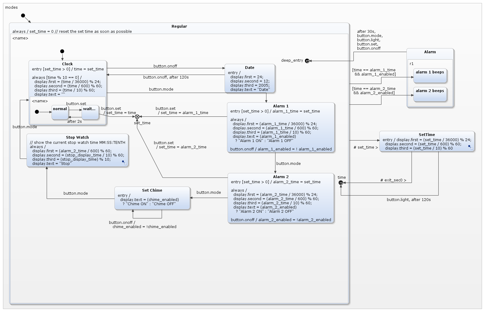
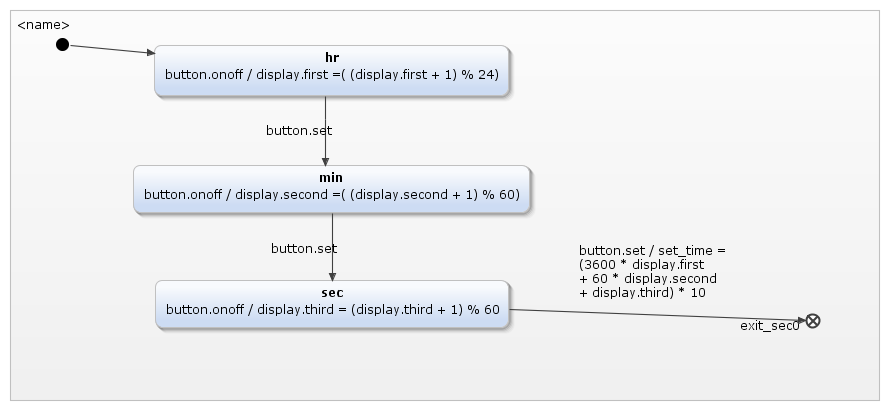

The digital watch example is based on a statechart created by David Harel in "On Visual Formalisms", in Communications of the ACM, May 1998. It is a good example for advanced statecharts, makes use of History States, and can be used to showcase a feature of YAKINDU SCT - refactoring composite states into subdiagrams.
The statechart in its original form is pretty huge, see the image below. It's rather hard to really see what is going on.
After refactoring, the whole situation is much better - two composite states have been refactored into subdiagrams and can be seen in a separate editor.  The subdiagram: 
=======This digital watch was first designed by Harel, the founder of the Statecharts Theory. He described it in "On Visual Formalisms", published in "Communications of the ACM" in May 1988.
As you can see in the picture below, the complete statechart is rather complicated and not easy to completely grasp on first glance.
We can use one of YAKINDU SCT's features, extracting composite states into subdiagrams!

This allows you to abstract the statechart to any level you want, so that you can review the statechart's overall functionality and its inner workings separately - much like a class diagram versus the complete codebase. Copy the example to your workspace and try the subdiagram editor!
For reference, the interface declaration of both statecharts: